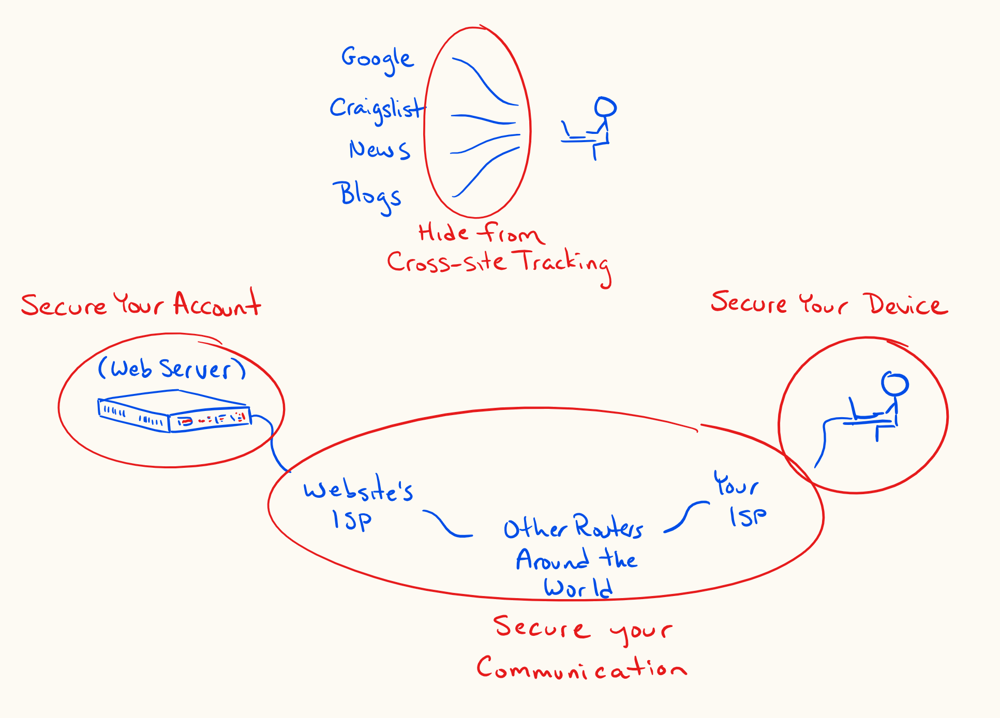

Online privacy and security
I am not a comÂputÂer-seÂcuÂriÂty or priÂvaÂcy exÂpert. I’m mereÂly a comÂputÂer sciÂenÂtist turned law stuÂdent who has thought about these topÂics for a long time.
Deciding on a seÂcuÂriÂty or priÂvaÂcy stratÂeÂgy is deÂcidÂing on a tradeoff: a tradeoff beÂtween seÂcuÂriÂty and priÂvaÂcy on the one hand and conÂveÂnience and pubÂlic parÂticÂiÂpaÂtion on the othÂer. To even conÂnect a deÂvice to the inÂterÂnet is to acÂcept a cerÂtain levÂel of risk. Know what you’re tradÂing. Know who you’re trustÂing and with what.
The EFF pubÂlishÂes a bunch of up-to-date seÂcuÂriÂty and priÂvaÂcy adÂvice. I’ll be linkÂing a lot to work they’ve alÂready done, but will try to highÂlight what I think will get most of you most of what you need.

90% of the way
Secure your device
If it is imÂporÂtant to you that a perÂson with physÂiÂcal acÂcess to your deÂvice not be able to acÂcess any data on it, you’ve got to set up full-disk enÂcrypÂtion. When you set up full-disk enÂcrypÂtion, the data on your disk gets enÂcryptÂed whenÂevÂer you shut off your comÂputÂer or phone. It can only be deÂcryptÂed by usÂing the passÂword that you set up, genÂerÂalÂly at startÂup. If you were to lose your phone, or sell it, or have it seized at the borÂder, noÂbody would be able to acÂcess your data withÂout the passÂword, even if they were to reÂmove the disk and try to read the data diÂrectÂly: that data would be enÂcryptÂed and unÂreadÂable.
On Windows, use BitLocker. On Android, use Secure Startup. On iPad and iPhone, use Data Protection. On maÂcOS, use FileVault.
Secure your communications
Use HTTPS wherÂevÂer posÂsiÂble., When you reÂquest a URL beÂginÂning in https://, the traffic is enÂcryptÂed beÂtween you and the tarÂget servÂer. For exÂamÂple, if you travÂel to https://sanÂchom.github.io, a perÂson that views your reÂquest while it is in tranÂsit (e.g. someÂbody snoopÂing on your wifi acÂcess point, your inÂterÂnet serÂvice provider, github’s inÂterÂnet serÂvice provider, etc.) will not be able to deÂcode what you’ve asked sanÂchom.github.io to give to you. They wouldn’t be able to see whether you asked for https://sanÂchom.github.io/inÂterÂvenÂers.html or for https://sanÂchom.github.io/colophon.html. All they’d be able to tell is that you’ve reÂquestÂed someÂthing from sanÂchom.github.io. Further, when the servÂer (sanÂchom.github.io) sends data back to you, it will also be enÂcryptÂed, so noÂbody would be able to read the conÂtent while it is in tranÂsit. Of course, this doesn’t matÂter so much when you’re just visÂitÂing my webÂsite, but this enÂcrypÂtion in tranÂsit is cruÂcial when you’re bankÂing, buyÂing things onÂline, or exÂchangÂing what you exÂpect to be priÂvate mesÂsages.
To emÂphaÂsize: HTTPS doesn’t preÂvent the webÂsite/servÂer you’re talkÂing to from seeÂing your reÂquest. That site needs to know what you’ve asked for and might even log your IP adÂdress which can be used to deÂterÂmine your loÂcaÂtion and your idenÂtiÂty with help from your inÂterÂnet serÂvice provider.
Secure your accounts
HTTPS (and as menÂtioned in the next secÂtion, VPNs, and end-to-end enÂcrypÂtion) proÂtect the priÂvaÂcy of your comÂmuÂniÂcaÂtions. Passwords inÂstead proÂtect the seÂcuÂriÂty of your acÂcounts. Online serÂvices use passÂwords to let you prove to them that you are who you say you are.
There are a few uniÂverÂsalÂly acÂceptÂed recÂomÂmenÂdaÂtions reÂgardÂing passÂwords:
- nevÂer use the same passÂword for more than one acÂcount
- use strong (long) passÂwords that do not inÂclude dicÂtioÂnary words
- use a passÂword manÂagÂer to alÂlow you to acÂtuÂalÂly do the preÂviÂous two things
- use two-facÂtor auÂthenÂtiÂcaÂtion on your most imÂporÂtant acÂcounts (e.g. email, the passÂword manÂagÂer itÂself)
Limit how you can be tracked
Even when you are comÂmuÂniÂcatÂing over a seÂcure chanÂnel, not logged into any acÂcounts, the sites that you visÂit can ask your browsÂer to store toÂkens that alÂlow those sites to track your acÂtivÂiÂty across sesÂsions and even on othÂer sites. Sites can also recÂogÂnize your browsÂer based on its unique configuration.
You can limÂit this by telling your browsÂer to opt-out from trackÂing, by usÂing a stanÂdard browsÂer, with few modifications, and by limÂitÂing how long cookÂies can be stored. On your phone, you can use Firefox Focus, which makes it very easy to mainÂtain next to no sesÂsion hisÂtoÂry. Even on your comÂputÂer, the Firefox browsÂer has betÂter seÂcuÂriÂty opÂtions than Google Chrome: Firefox makes it easÂiÂer for you to delete all stored inÂforÂmaÂtion whenÂevÂer you close the browsÂer. Tools like AdBlock or Privacy Badger can also help.
If you use a Google acÂcount, know what you’re sharÂing with them and what you’re alÂlowÂing them to store. Opt out of perÂsonÂalÂized recÂomÂmenÂdaÂtions and anÂaÂlytÂics.
98% of the way
VPNs
A VPN (a virÂtuÂal priÂvate netÂwork) lets you hide more inÂforÂmaÂtion from your inÂterÂnet serÂvice provider (e.g. Shaw, Telus) and from the webÂsites you visÂit. Your serÂvice provider would no longer see what webÂsites you’re conÂnectÂing to. The webÂsites you’re conÂnectÂing to would no longer see your IP adÂdress (they’d see an IP adÂdress of the VPN provider inÂstead). VPN conÂnecÂtions also enÂcrypt traffic beÂtween your deÂvice and the VPN, even non-HTTPS traffic. Your ISP would no longer be able to see any of the traffic beÂtween you and the inÂterÂnet.
When you use a VPN, you’re movÂing some of the trust that you would norÂmalÂly place in your inÂterÂnet serÂvice provider (ISP) to your VPN provider. Your ISP would no longer see and poÂtenÂtialÂly log your traffic, but your VPN provider might. So, choose a VPN provider careÂfulÂly, payÂing atÂtenÂtion to their logÂging polÂiÂcy and laws in the counÂtry where they are based.
Some cauÂtion though: it is acÂtuÂalÂly tricky to set up a VPN to abÂsoluteÂly route all traffic through the VPN. There are ways that you could inÂadÂverÂtentÂly side-step your own VPN conÂnecÂtion. For exÂamÂple, if your VPN isn’t alÂways-on, any backÂup serÂvices that run in the backÂground will send traffic over your non-VPN conÂnecÂtion any time that your VPN is disÂconÂnectÂed. If those serÂvices hapÂpen to start up beÂfore your VPN starts up, you’ll be reÂvealÂing your true IP adÂdress to Google Drive, or OneDrive, or DropBox, etc.
Further, if you have othÂer deÂvices in your home that conÂnect to acÂcounts that you norÂmalÂly use via the VPN, the comÂpaÂny runÂning the acÂcount could link that inÂforÂmaÂtion toÂgethÂer. If you conÂnect to your Google acÂcount on your phone and comÂputÂer through a VPN, but your Chromecast or smart speakÂers conÂnect to your Google acÂcount not through the VPN, Google would easÂiÂly be able to deÂterÂmine that your VPN traffic should be atÂtribÂuted to the IP adÂdress asÂsoÂciÂatÂed with your Chromecast or smart speakÂers. The conÂcluÂsion: to truÂly proÂtect your IP adÂdress from Google or Amazon, etc. you’d have to eiÂther comÂmit to not usÂing smart deÂvices outÂside of the VPN, or set up the VPN conÂnecÂtion diÂrectÂly on your router, so that all traffic in your home is forced through the VPN.
There are othÂer ways that a VPN might proÂvide a false sense of seÂcuÂriÂty: it might leak DNS queries to your ISP, it might leak IPV6 conÂnecÂtions to your ISP.
Domain Name Servers
The weakÂest link in all of the above may be the serÂvice that conÂverts a webÂsite name that you’ve reÂquestÂed into an IP adÂdress. This is called a doÂmain name servÂer (DNS). Often, your comÂputÂer and router will be set up to send those DNS queries to your ISP. This is one way that your ISP will be able to know what webÂsites you’re visÂitÂing. But, there are ways to avoid leakÂing this inÂforÂmaÂtion to your ISP. You can choose a VPN provider that hanÂdles DNS queries. Or, at least on the most reÂcent verÂsions of Firefox, you can ask for your DNS queries to get sortÂed out over HTTPS (they’ll be enÂcryptÂed, and sent to a more trustÂed DNS serÂvice).

End-to-end encryption
End-to-end enÂcrypÂtion means that mesÂsages are enÂcryptÂed the enÂtire way beÂtween you and the inÂtendÂed reÂcipÂiÂent. Nobody othÂer than you two can read the mesÂsages, not even the comÂpaÂny runÂning the serÂvice. WhatsApp and Signal are two mesÂsagÂing serÂvices that work this way. They both use the same open-source enÂcrypÂtion proÂtoÂcol. WhatsApp has an opÂtionÂal cloud-backÂup sysÂtem that cirÂcumÂvents this enÂcrypÂtion proÂtecÂtion (your backÂups would be a way for someÂbody to get the unÂenÂcryptÂed conÂverÂsaÂtions), but you can keep that turned off. Signal has an opÂtionÂal, enÂcryptÂed loÂcal-backÂup sysÂtem.
Some other things to read or listen to
- McSweeney’s 54, The End of Trust.
- A Podcast Called INTREPID, a naÂtionÂal seÂcuÂriÂty podÂcast, ocÂcaÂsionÂalÂly disÂcussing govÂernÂment surÂveilÂlance, CSIS, warÂrants, and Bill C-59.
- LawFare Podcast, anÂothÂer naÂtionÂal seÂcuÂriÂty podÂcast, ocÂcaÂsionÂalÂly disÂcussing enÂcrypÂtion, govÂernÂment surÂveilÂlance, offensive cyÂber warÂfare.
- Vice Motherboard’s Cyber podÂcast, foÂcused on priÂvate inÂterÂnet seÂcuÂriÂty and how to avoid beÂing hacked.
- An episode of CBC’s The Current about the vulÂnerÂaÂbilÂiÂties in smart deÂvices.
Notes
1. ↑ EFF: Keeping Your Data Safe; EFF: Encrypting Data At Rest.
2. ↑ EFF: Encrypting Data In Transit.
3. ↑ The EFF pubÂlishÂes a browsÂer exÂtenÂsion, HTTPS Everywhere, which enÂsures as much traffic as posÂsiÂble is routÂed over HTTPS. But, while HTTPS is inÂcreasÂing in preÂvaÂlence, not all webÂsites even supÂport HTTPS. This will proÂtect your most imÂporÂtant comÂmuÂniÂcaÂtions with banks, email serÂvices, etc., but will ocÂcaÂsionÂalÂly be unÂavailÂable on some sites that don’t conÂsidÂer their inÂforÂmaÂtion to be worÂthy of enÂcrypÂtion.
4. ↑ EFF: Creating Strong Passwords.
5. ↑ EFF: How to: Enable Two-Factor Authentication.
6. ↑ EFF: Panopticlick 3.0 (how unique does your browsÂer apÂpear to onÂline trackÂers).
7. ↑ EFF: Privacy Badger.
8. ↑ Google: Privacy Checkup.
9. ↑ Amul Kalia, “Here’s How to Protect Your Privacy From Your Internet Service Provider”, Electronic Frontier Foundation (3 April 2017).
10. ↑ “Choosing the VPN That’s Right For You”, Electronic Frontier Foundation (9 June 2016).
11. ↑ Dann Albright, “How DNS Leaks Can Destroy Anonymity When Using a VPN, And How to Stop Them”, MakeUseOf (14 May 2015).
12. ↑ Nykolas Z, “DNS Security and Privacy — Choosing the right provider”, mediÂum.com (18 April 2018).
13. ↑ “Transport-Layer Encryption or End-to-End Encryption?”, Electronic Frontier Foundation (24 November 2018).